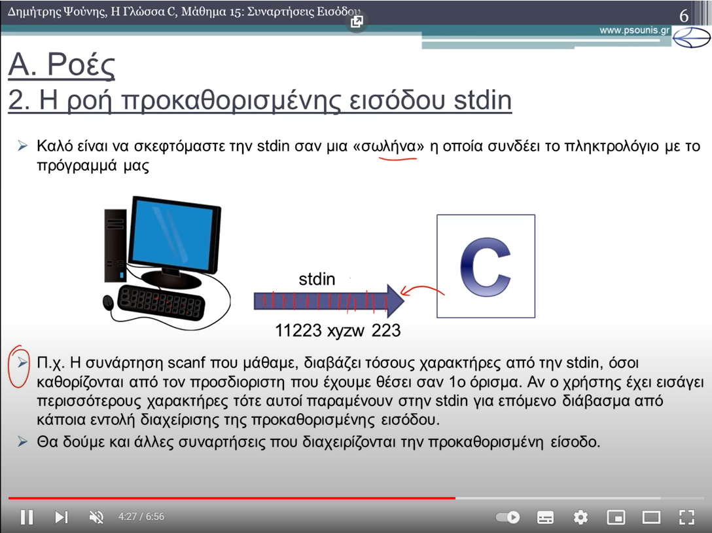
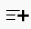
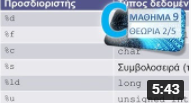

Η ΓΛΩΣΣΑ C - ΜΑΘΗΜΑ 15 - ΣΥΝΑΡΤΗΣΕΙΣ ΕΙΣΟΔΟΥ - ΘΕΩΡΙΑ 1 από 5
5.693 προβολές
·
26 Φεβ 2016
56
 ΔΕΝ ΜΟΥ ΑΡΕΣΕΙ
ΔΕΝ ΜΟΥ ΑΡΕΣΕΙ KOINOΠΟΙΗΣΗ
KOINOΠΟΙΗΣΗΑΠΟΘΗΚΕΥΣΗ
...

ΠΛΗ31 ΜΑΘΗΜΑ 1.2 - ΤΥΦΛΗ ΑΝΑΖΗΤΗΣΗ - ΘΕΩΡΙΑ 3 από 3
Δημήτρης Ψούνης
3,7 χιλ. προβολές · πριν από 6 έτη

Η ΓΛΩΣΣΑ PROLOG - ΜΑΘΗΜΑ 2 - ΤΡΟΠΟΣ ΕΚΤΕΛΕΣΗΣ...
Δημήτρης Ψούνης
3,3 χιλ. προβολές · πριν από 6 έτη

Μίξη - Δημήτρης Ψούνης
YouTube

ΠΛΗ31 ΜΑΘΗΜΑ 2.2 - ΚΑΤΗΓΟΡΗΜΑΤΙΚΗ ΛΟΓΙΚΗ...
Δημήτρης Ψούνης
1,8 χιλ. προβολές · πριν από 6 έτη

Η ΓΛΩΣΣΑ C - ΜΑΘΗΜΑ 20 - ΑΡΧΕΙΑ - Θεωρία 4 από 8 - Δυαδικά Αρχεία
Δημήτρης Ψούνης
2,9 χιλ. προβολές · πριν από 2 έτη

Η ΓΛΩΣΣΑ C - ΜΑΘΗΜΑ 16 - ΣΥΝΑΡΤΗΣΕΙΣ ΕΞΟΔΟΥ - Θεωρία ...
Δημήτρης Ψούνης
2,4 χιλ. προβολές · πριν από 6 έτη

Η ΓΛΩΣΣΑ C - ΜΑΘΗΜΑ 9 - ΕΙΣΑΓΩΓΗ ΣΤΗΝ ΕΙΣΟΔΟ/ΕΞΟΔΟ...
Δημήτρης Ψούνης
6,2 χιλ. προβολές · πριν από 6 έτη